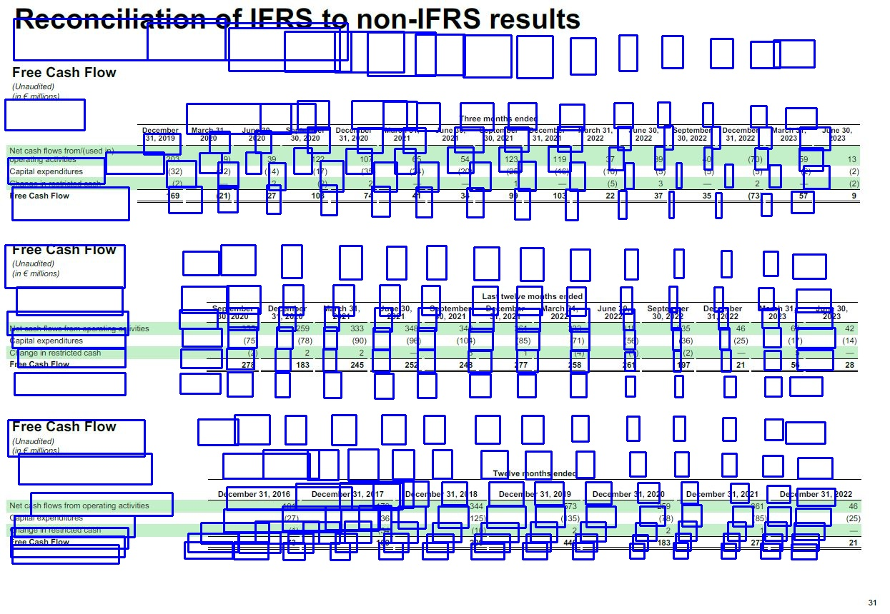

image00046.jpg
|  |
| | | | | | | | | | | | | | | | ( . PiilIiDlS) | M | Sebtmr | | | MarCh31 | | TBF00 otS tdod | | | | | | Dbc blbbF | Mr3 | | DbtbbbF −31, 2019 | 2020 | 30 2020 | 330 2020 | Decerber −31, | 20 | ne 30 2021 | S −30,201 | Dcorber Marh31 31,2021 +2022 | 3 2022 | .Set) | 30,2022 | 31, 2022 | ure:30 −2023 −2023 | | |Nf CaSP f1S frpm/(uSpd {ph) | (9 | | 122 | 107 (35) | 65 | 54 (20) | 123 (25) | 119 (16 | 37 (10) | .39 (5 | 50 5) | (70) 5) | 359 133 | | p aital exnitrs Change:in.rStrictbd h | 203 (32) (2) | (12 .. | 39, (15) 2) | 17) 2)) | 2 | (24) --. | | 7 | | | 3 | . | 2 | (2) (2 -.. γ(2) | | ree | 169 | (21)* | −27 | 103 | −74. | 41 | 334 | −g9 | .- 103 | (5) 22 | 37− | −35 | (73) | 57 | | (lGlditd) (iP c. PiliCS) | | | | | | | | | | | | | | | | | to | ecemr | Marc 31 | June 30 | | | LaSt tW0lV0 lotthS otdod | Marcn31 | | Soptemer | cer | | | | +Nf CGSB.fl0S:trpm Oratin9+2Ctiiti0S. | | 502020 | 320 259 | 2021 | −202 | 502021 .35 | 5102021 .359 | 31 | .333 | d 20 31g | 02022 | 312022 | r3, 2023 | id 30 . | | Capitalpxpenditures | | 3 (75) | (7g) | 333, | (g0) | (g6) | 0(104) | (95) | 71) | (56) | 235 (36) | P5 (25) | | 42) (17 (15) | | Ca9 tlt C2SB) a | | (2) −27g | −1g3 | ) | 2) 245 | 252 | 3 248 | . −277– | () 258 | 1) 261 | () 197 | . 21 | | 5 . −56 −25< | | | | | | | | | | | | | | | | | flnSdit ) (iD . PiliCfS) | | | | | | | | | | | | | | | | | | | | | | | TUglyglotlS gldg 0 | | | | | | | | Net CBSBfl0S:from Obbrati9 atiitigS | Scerber 31,2016 .101 | Dombr32017 | | | | DCfb0r 31+ 201g | | | | Db3 | | DColb0r 31, 2021 | | Doomber3 2022 .46 | | Caital pxenditrgs Cant) | | (27) | | 179 (36 | | 344 (125) | | .573 (135 | | 259_ (7 2 | | .361 (g5) | | (25) | | | (1 | | | ( | | 10 | | | | | | 17 | -- | | | | 73 | | 109 | | 209 | | 2 −440 | | | | 277_ | 21 | | | | | | | | | | | | 13 | | | −51 |
|
 |